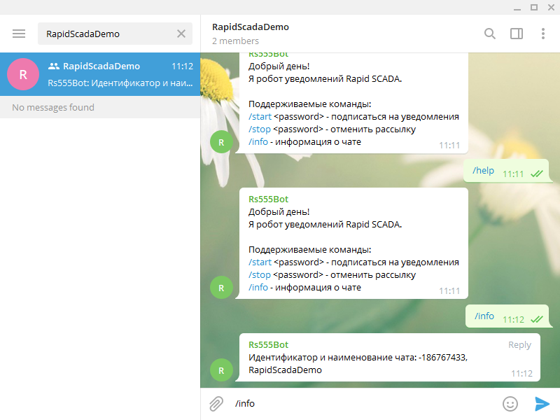
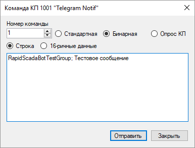

Драйвер Telegram предназначен для рассылки уведомлений пользователям с помощью популярного мессенджера Telegram. Преимуществами использования Telegram является оперативность получения уведомлений, отсутствие платы за использование сервиса и удобство управления группами рассылки.
Драйвер Telegram устанавливается в соответствии с общей последовательностью установки драйверов Коммуникатора. Файл библиотеки драйвера - KpTelegram.dll.
Предварительно необходимо создать бота с системе Telegram. Для этого:
Настройка рассылки уведомлений выполняется с помощью программы Администратор как часть проекта. Последовательность настройки:
 .
. .
.
Если настройка выполнена правильно, то Ваш бот будет отвечать на команды, отправленные из мессенджера, например, команду /help. Необходимо в настройках драйвера указать подписки (чаты), с которыми взаимодействует Коммуникатор.

Чтобы получить идентификатор и наименование подписки, следует отправить команду /info с помощью мессенджера. Затем добавить полученные данные на форме конфигурации КП.
Устаревший способ: добавление или удаление подписки выполняется с помощью команд /start и /stop с указанием ранее сгенерированного пароля. Однако, по умолчанию изменение подписки заблокировано. Чтобы его разблокировать, в Коммуникаторе нужно отправить для КП стандартную команду номер 2 со значением 1. После этого можно добавлять или удалять подписки.
Чтобы из Rapid SCADA отправить сообщение в группу Telegram, необходимо отправить бинарную команду номер 1, содержащую имя (или идентификатор) группы и текст сообщения. Например:
RapidScadaDemo; Тестовое сообщение.

Автоматическая рассылка уведомлений при выполнении определённых условий и возникновении событий осуществляется с помощью Модуля автоматического управления.